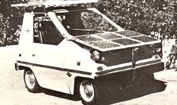

During MOTHER's solar tour of Israel earlier this year (see page 90 for details on next year's tour offerings), one of this publication's editors took the opportunity to stop by the Engineering Department at Tel Aviv University . . . to gather some information about a solar-powered automobile being developed there under the direction of Professor Arye Braunstein. Even though the car was partially dismantled at the time of that visit, we felt sure that many of our readers might nonetheless like to learn a few of the de tails concerning the sun-driven runabout.
The basic vehicle is-as some of you may realize from the accompanying photo-a metal-framed, polyvinyl-bodied Citicar that weighs in (complete with batteries and solar panels) at 1,320 pounds. It runs on a two-step (24/48-volt) DC system, which is controlled by a series of microswitches and relays: At speeds up to 10 MPH, current is drawn-through resistance-from two banks of four-in-series six-volt batteries. After starting, the resistance is dropped and the car oper ates on 24 volts normally, and at cruising speeds (up to 40 MPH) the series-wound motor functions at 48 volts ... with all eight batteries "in line". Although initial current draws can reach 500 amps, the average pull at cruising is around 100 amperes.
The two solar panels on the auto's hood and roof (which have a combined peak power of 400 watts with a total of 432 cells) charge the batteries at 48 volts and provide about one-third of the energy required for daily driving . . . up to a maximum range of 50 miles. The remaining electric "fuel" is stored at night, using a built-in home charging unit.
Dr. Braunstein is the first to admit that the solar Citicar is by no means perfect, but his researchers are steadily improving the vehicle and have several specific goals in mind. By using electronic controls and commutation circuits, power regeneration, permanent magnet or AC motors, and stationary-rather than "on vehicle"-solar cell-arrays (the latter coupled with exchangeable sets of efficient batteries), the professor and his staff hope to increase the percentage of solar-provided energy to as high-as 90% . . . double the effective range of the vehicle ... and add another 10 MPH to its top speed. Andsince they're located in one of the sunniest regions in the world-it seems likely that they'll be able to accomplish their objectives!
|
 |
|
|